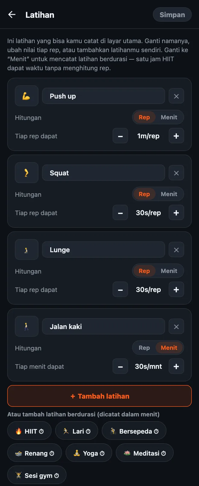

Cara mengatur latihanmu sendiri di HonorFit
Halo semuanya! Awalnya HonorFit itu aplikasi blokir push up buat diriku sendiri: Instagram tetap terkunci sampai aku push up dulu, dan aku mencatatnya sendiri dengan sistem kejujuran (tanpa kamera). Bawaannya ada empat latihan: push up, sit up, pull up, dan squat.
Tapi tidak semua orang mau push up. Mungkin pergelangan tanganmu tidak kuat, mungkin kamu lebih suka burpee, atau mungkin kamu sudah lari 8 km hari ini dan mau itu dihitung juga. Masuk akal! Jadi semuanya bisa kamu ubah. Ini caranya, plus mana yang gratis dan mana yang butuh Pro.
Mana yang gratis dan mana yang Pro
Kabar baik dulu: mulai versi 1.15.0, hampir semua yang ada di tulisan ini gratis. HonorFit punya empat latihan bawaan dengan nilai seperti ini:
| Latihan | Tiap rep dapat (default) |
|---|---|
| 💪 Push up | 1 menit |
| 🔥 Sit up | 30 detik |
| 🧗 Pull up | 1 menit 30 detik |
| 🦵 Squat | 30 detik |
Di versi gratis kamu bisa mengganti nama, mengubah urutan, dan menghapus latihan, mengubah nilai tiap rep, mencatat latihan berdurasi dalam menit, dan menambah sampai 3 latihan buatanmu sendiri. Roda rep bisa sampai 100 per set, dan kamu bisa menyimpan sampai 2 jam sekaligus. Blokir, pencatatan, dan statistik gratis selamanya.
Pro harganya US$3 per bulan atau US$19,99 sekali bayar. Itu harga di AS: harganya beda-beda tergantung negara dan mata uang, dan toko aplikasinya akan menampilkan harga dalam mata uangmu. Untuk urusan latihan, Pro memungkinkanmu menambah latihan sendiri sebanyak yang kamu mau. Pro juga menghapus batas 2 jam waktu tersimpan dan menambah rutinitas tersimpan, mode jeda, mode utang, serta riwayat bulanan dan tahunan.
1. Buka editor latihan
- Di layar utama, ketuk ikon roda gigi di kanan atas untuk membuka Pengaturan.
- Ketuk kartu Latihan di bagian atas.
Kamu akan melihat satu kartu untuk tiap latihan. Tidak ada perubahan yang berlaku sampai kamu mengetuk Simpan di kanan atas, jadi bebas saja coba-coba. Kalau kamu keluar tanpa menyimpan, tidak ada yang berubah.

2. Ganti nama latihan atau emojinya
Ketuk namanya dan ketik apa saja. “Push up” bisa jadi “Push up lutut” atau “Push-up dinding” kalau memang itu yang kamu lakukan. Untuk mengganti ikon, ketuk kotak emoji di sebelah kiri dan pilih dari daftarnya (ada sekitar 40 emoji yang berbau olahraga).
Satu hal kecil: nama latihan bawaan mengikuti bahasa aplikasi, jadi kalau HP-mu pakai bahasa Inggris, “Lompat tali” akan muncul sebagai “Jump rope”. Begitu kamu ganti namanya, yang muncul persis seperti yang kamu ketik.
3. Atur berapa screen time yang didapat tiap rep
Di bawah tiap latihan ada Tiap rep dapat dengan tombol − dan +. Tiap ketukan mengubahnya 5 detik, dan paling rendah 5 detik. Jadi burpee bisa kamu buat bernilai 1m30s dan jumping jack 10s, terserah mana yang menurutmu adil.
Kamu juga bisa mengubah nilainya saja tanpa membuka editor: di Pengaturan ada bagian Nilai rep tepat di bawah kartu Latihan, dengan tombol −/+ yang sama.
4. Tambah latihan
Ada dua cara:
- Ketuk “＋ Tambah latihan”. Akan muncul kartu baru bernama “Latihan baru” dengan nilai 30 detik per rep. Ganti namanya dan atur nilainya.
- Ketuk salah satu saran. Di bawah tombol itu ada deretan latihan populer yang bisa ditambahkan dengan sekali ketuk: Burpee, Lunge, Jumping jack, Plank, Mountain climber, Dips, Lompat tali, High knees, Bicep curl, Kettlebell swing, Wall sit, Russian twist, Glute bridge, dan Senam Kegel. Semuanya juga mulai dari 30 detik per rep. Begitu ditambahkan, latihan itu hilang dari daftar saran.
Di versi gratis kamu bisa punya sampai 3 latihan buatanmu sendiri sekaligus (latihan bawaan yang diganti namanya tidak dihitung). Dengan Pro, jumlahnya tanpa batas.
Tiap latihan punya roda sendiri di layar utama, jadi menurutku cukup sekitar empat saja. Lebih dari itu, kamu harus scroll dulu untuk menemukan yang kamu mau.
5. Catat latihan berdurasi (menit, bukan rep)
Ini yang paling sering ditanyakan ke aku. Ada olahraga yang memang tidak dihitung pakai rep: jalan kaki, kelas yoga, lari, sejam di gym. Tiap kartu punya pilihan Hitungan: Rep | Menit. Pindahkan ke Menit, maka roda itu menghitung menit, dan nilainya berubah jadi Tiap menit dapat.
Ada juga saran latihan berdurasi sekali ketuk (ada tanda ⏱): HIIT, Lari, Bersepeda, Renang, Yoga, Pilates, Meditasi, Sesi gym, dan Jalan kaki.
Latihan berdurasi baru mulai dari 30 detik per menit, jadi satu jam HIIT dapat 30 menit waktu app. Perlu diingat: kalau kamu memindahkan latihan antara Rep dan Menit, nilainya kembali ke 30 detik, karena “1 menit per rep” dan “1 menit per menit” itu hitungannya jauh beda. Atur lagi saja setelah dipindah.
Rodanya menghitung menit penuh, jadi plank 30 detik kurang cocok kalau pakai Menit. Untuk gerakan tahan seperti itu, aku sarankan tetap di Rep dan tentukan sendiri arti satu rep buatmu (misalnya, satu kali tahan 20 detik).
6. Hapus latihan, atau mulai dari awal
- Ketuk ✕ di kartu untuk menghapus latihan itu. Minimal harus tetap ada satu.
- Kembalikan default di bagian bawah mengembalikan empat latihan awal dengan nilai awalnya. Sama seperti yang lain di sini, baru berlaku setelah kamu mengetuk Simpan.
Cara aku memilih nilainya
Nilainya itu harga aplikasimu, jadi tujuannya adalah harga yang benar-benar mau kamu bayar, bukan yang bikin kamu curang. Beberapa titik awal:
- Gerakan yang lebih berat dapat lebih banyak. Pull up dan burpee 1m30s, push up 1m, squat dan lunge 30s.
- Latihan berdurasi kira-kira setengahnya. 30 detik per menit artinya jalan kaki 20 menit memberimu 10 menit scrolling. Kalau jalan kaki adalah kebiasaan yang paling kamu mau, naikkan jadi 1 menit per menit.
- Kalau kamu mulai mengakali angkanya, turunkan harganya. Itu aturanku untuk sistem kejujuran. Mencatat rep yang tidak kamu lakukan artinya harganya yang salah, bukan kamunya yang payah.
- Mode sulit (gratis) memotong semua nilai jadi setengah dengan satu tombol di header, kalau kamu mau hari yang lebih berat tanpa mengedit semuanya.
Kalau mau ide untuk susunan tertentu, aku menulis dua tulisan lagi: Kegel dan glute bridge sebagai latihan pembuka kunci, dan latihan ringan kalau push up bukan buatmu.
HonorFit Blocker adalah aplikasi blokir gratis untuk iPhone dan Android. Sistem kejujuran, tanpa kamera, tidak ada data yang keluar dari HP-mu. Sampai 3 latihan kustom dan latihan berdurasi gratis; Pro membuatnya tanpa batas. Memang tidak untuk semua orang, tapi siapa tahu ada di antara kalian yang suka!